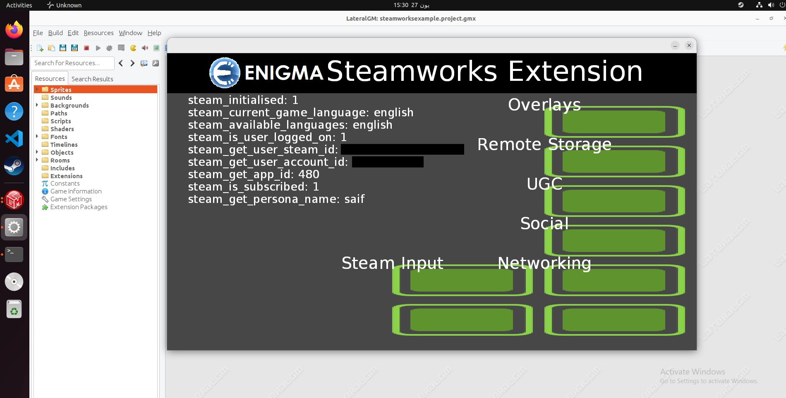

This blog post is related to my Google Summer of Code 2023 project: Steam Workshop SDK/Third Party Integration For ENIGMA .
I decided to use the simplest Linux distro, which is Ubuntu Linux. Using VMware Workstation, I am good to go.
I tried to run the example game that contains the call to SteamUser()->GetSteamID()
and it worked! That's not what I expected but I will take it. I think it worked because
Steam.exe is compiled also using MinGW on Linux, it is not like Windows where it is compiled
using MSVC. Anyway, let's move on.
Now let's implement the rest of the General API and start with the Overlay API. I am really off schedule, and I need to catch up.
On Linux, the overlay need a special setup in order to work. This explained here in the
FAQ. When
I started implementing the Overlay API, I found that there is a function called
steam_is_overlay_activated(); that requires using Callbacks. I don't understand how
Callbacks work with Steamworks, but I start with the official example game and see how they
implemented it. I started looking at the official documentation, and the official example game
at the same time. I realized that there are no Callbacks implemented in the official example
game for the Steam Overlay. Let's add it and see what happens. I added the code inside
OverlayExamples.cpp file as they did in other Callbacks. I ran the Spacewar game,
and when I press SHIFT+TAB, the overlay is activated, and a message popped up saying "yaaay",
and when I close it, another message popped up saying "nooo". I also tried to remove the call to
SteamAPI_RunCallbacks(); function inside SpaceWarClient.cpp file to
see when will happen, and the messages are not popped up.
So after these experiments, I think I need to call SteamAPI_RunCallbacks(); on
a regular basis.
Now I think I understand how Callbacks work. But in order to implement Callbacks in my project, I need to change the whole plan. I don't need to create a Wrapper in my project, I need to create a layer between Steamworks ENIGMA's extension and the official Steamworks SDK. This layer is some sort of architecture of classes, like composition for example. I looked at the Spacewar example game, and it has all I need. Let's modify the code I wrote so far and make it work.
I made some progress regarding the example game:


Here's the look I wish to reach:


c_overlay::c_overlay()
: overlay_activated_(false), m_CallbackGameOverlayActivated(this, &c_overlay::on_game_overlay_activated) {}
void c_overlay::on_game_overlay_activated(GameOverlayActivated_t* pCallback) {
if (pCallback->m_bActive) {
c_overlay::overlay_activated_ = true;
DEBUG_MESSAGE("Overlay activated successfully.", M_INFO);
} else {
c_overlay::overlay_activated_ = false;
DEBUG_MESSAGE("Overlay deactivated successfully.", M_INFO);
}
}
bool c_overlay::overlay_activated() { return c_overlay::overlay_activated_; }
On 27 June 2023, I stopped working on the project due to Eid Al-Adha and Arafah Day. It wasn't my best Eid, but I hope it will be better next year. I will continue working on the project on 2 July 2023.
On 2 July 2023, I started working on the project again. I finished implementing the Overlay API and moved on to the Achievements API. The example game is looking greater and greater. Instead of writing the Achievements API, I think this is a perfect time for writing tests for the implemented APIs till now. In order to do that, I need to keep Steam running, which also means that anyone who wants to run the tests needs to have Steam running. This is not good as the CI doesn't have Steam installed. Also, not all ENIGMA's developers have Steam installed. So, I need to write some sort of mock. I asked my mentor about this and he replied
go ahead and write the test anyway and have the CI skip it for now
R0bert — 03/07/2023 19:47
Remember GameDev.tv's Game Jam 2023 which I mentioned earlier? I gained another 2 courses in it:
- Unity Multiplayer (Mirror): Intermediate C# & Networking.
- Math For Video Games: The Fastest Way To Get Smarter At Math.
I expected that I will get some benefits from the unity multiplayer course, but it's using Mirror library for networking not Steamworks.
On 5 July 2023, I received personal bad news that I don't want to talk about it. Now I don't have any intention to work on testing and documenting. I continued working on the Stats and Achievements API.